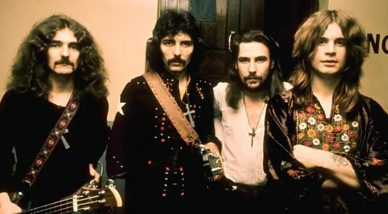
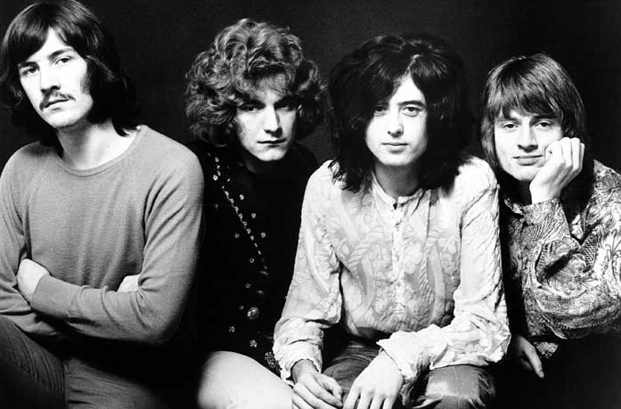
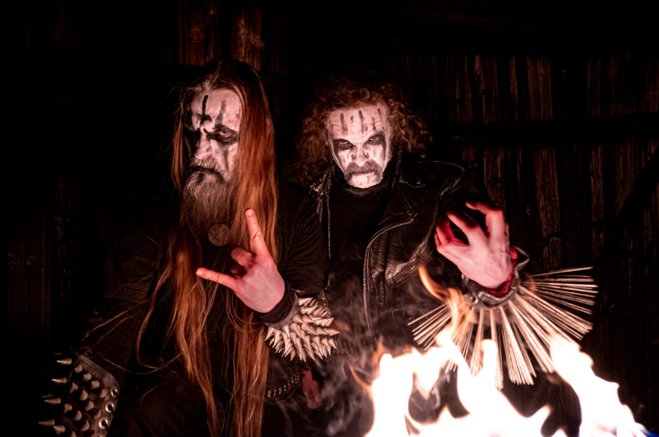
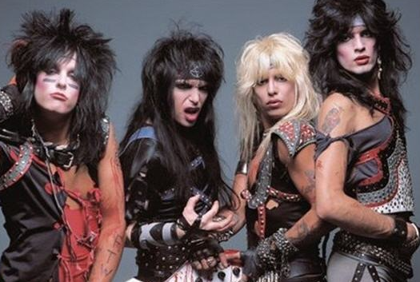

Introdução
O rock e o metal consolidaram-se como pilares da contracultura, moldando não apenas o cenário musical, mas também a moda, o comportamento e a política ao longo das décadas. Desde que as primeiras batidas do rock and roll surgiram na década de 1950, o gênero serviu como uma ferramenta de expressão para a juventude, evoluindo da rebeldia de Elvis Presley e Chuck Berry para as experimentações psicodélicas e progressivas dos anos 60 e 70. Essa base sólida permitiu que a música se tornasse um campo vasto de inovação, onde a distorção das guitarras e a potência vocal passaram a ser usadas para explorar desde temas sociais e existenciais até narrativas fantásticas, garantindo que o estilo nunca se tornasse estático e permanecesse relevante em diferentes contextos históricos.
Com o nascimento do heavy metal na década de 1970, personificado por bandas como Black Sabbath, a sonoridade tornou-se mais densa e técnica, introduzindo o uso sistemático de trilhas sonoras sombrias e andamentos complexos. Essa ramificação abriu portas para uma explosão de subgêneros que variam desde o thrash metal veloz até o metal sinfônico e o death metal, demonstrando uma diversidade sonora impressionante que une precisão musical a uma estética visual marcante. Hoje, a comunidade global de fãs sustenta festivais gigantescos e uma indústria independente vibrante, provando que, apesar das mudanças constantes no mercado fonográfico, a energia visceral e a autenticidade desses gêneros continuam a ressoar com novas gerações de ouvintes ao redor do planeta.

Elvis Presley foi o grande catalisador que transformou o rock and roll em uma força cultural global, sendo frequentemente chamado de o "pai" ou o "rei" do gênero por sua habilidade única de sintetizar influências diversas. Ao fundir o ritmo vibrante do R&B e do gospel com as raízes do country, ele rompeu as barreiras raciais e sociais da década de 1950, dando voz a uma juventude que buscava identidade e rebeldia.
Bandas Clássicas

Ao longo da história, várias bandas ajudaram a moldar o som do rock e do metal. Grupos como Led Zeppelin, Black Sabbath e Deep Purple estabeleceram as bases do hard rock e do heavy metal, influenciando gerações futuras de músicos.

Metal e Seus Subgêneros
O metal se diversificou em diversos estilos, como thrash metal, death metal, power metal e black metal. Cada subgênero possui características próprias, desde riffs rápidos e agressivos até atmosferas sombrias e épicas. Bandas como Metallica, Iron Maiden e Slayer são exemplos importantes dentro dessa evolução.


Rock Moderno
O rock continua se reinventando com bandas contemporâneas que misturam elementos clássicos com novas influências. Grupos atuais exploram fusões com eletrônica, indie e até hip-hop, mantendo o gênero vivo e relevante.
Impacto Cultural
Mais do que música, o rock e o metal representam estilos de vida, atitudes e movimentos culturais. Eles influenciaram moda, comportamento e até posicionamentos políticos, sendo uma forma poderosa de expressão artística.